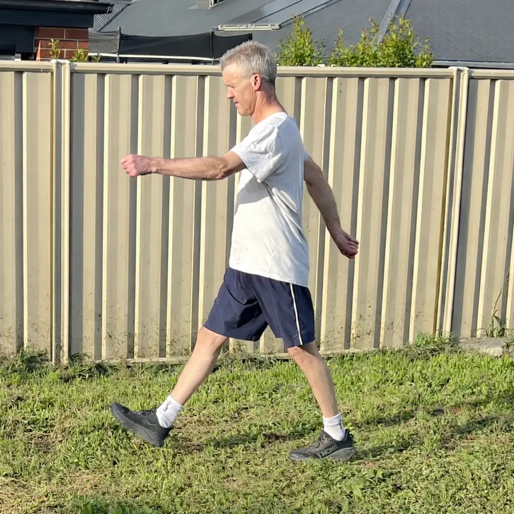
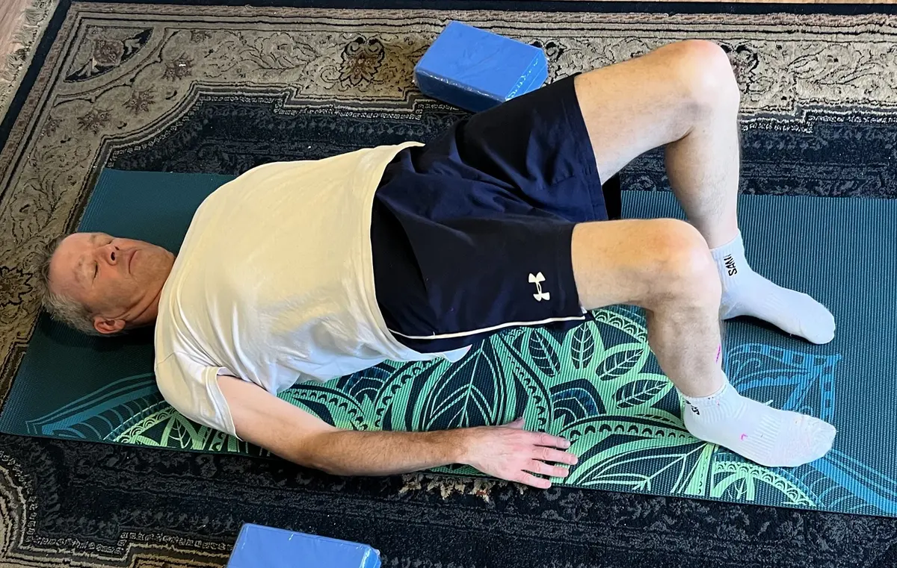
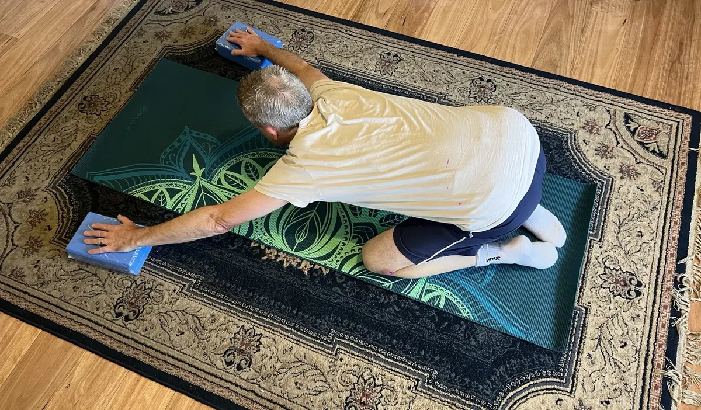
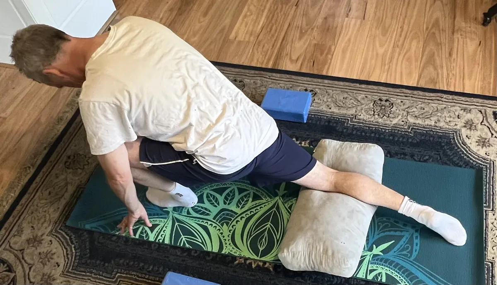

A quick, honest note
This is general information based on what works for me. It isn't personalised medical or physiotherapy advice. If you have an injury, ongoing pain, a heart condition, or you haven't exercised for a long time, check with your GP or a physiotherapist first. Start gently, and stop any exercise that causes sharp pain.
What a week looks like
Every day includes a walk and a few minutes of mobility. Two days add a short strength session, and balance is woven through the week. Sport or play is a bonus, not homework.
| Day | Main focus | Time |
|---|---|---|
| Monday | Strength session A + 5 min mobility | 20–25 min |
| Tuesday | Walk + balance practice | 20–30 min |
| Wednesday | Walk + 10 min mobility | 20–30 min |
| Thursday | Strength session B + 5 min mobility | 20–25 min |
| Friday | Walk + balance practice | 20–30 min |
| Saturday | Sport or play (tennis, a bike ride, a long walk with family) | Whatever you enjoy |
| Sunday | Rest, or an easy walk and gentle stretching | Optional |
Swap the days around to suit your week. The point is the rhythm, not the exact schedule.
Walking: the base of everything

Walking is easy on the joints, needs no equipment, and is something you can do for the rest of your life. Aim for most days of the week. Twenty minutes is a great start. If you can, walk outside in the morning: the daylight helps you wake up, and the quiet is a good time to think or pray.
- Start where you are. Ten minutes is fine. Add five minutes a week.
- Walk at a pace where you can talk but not sing. That's a comfortable, useful effort.
- Make it social. Walking with someone makes it more likely you'll keep going.
Strength: two short sessions a week
Strength protects your joints, supports your posture and makes everyday life easier, from carrying shopping to getting up off the floor. Two 20-minute sessions a week, done consistently, go a long way.
Do each exercise for the reps listed, rest about a minute, and repeat the circuit two or three times. Choose an easier version if you need to. Good form matters more than more reps.
Session A
- Sit-to-stand squats: 8–12 reps. Stand up from a chair and sit back down slowly. Progress by not quite touching the chair.
- Incline push-ups: 6–12 reps. Hands on a bench or kitchen bench. Lower the incline as you get stronger.
- Glute bridge: 10–15 reps. Lie on your back, knees bent, and lift your hips until your body is in a straight line.
- Dead bug: 6–10 each side. On your back, slowly extend the opposite arm and leg while keeping your lower back gently pressed down.
Session B
- Split squat or supported lunge: 6–10 each leg. Hold a chair or wall for balance if needed.
- Rows: 8–12 reps. Use a resistance band around a post, or a sturdy table edge for inverted rows.
- Side plank (knees or feet): 15–30 seconds each side.
- Calf raises: 12–15 reps. Holding a wall, rise onto your toes and lower slowly.

Balance: a few minutes, most days
Balance is a skill, and like any skill it fades if you don't use it. The good news is that it improves quickly with a little regular practice. Do these near a wall or a sturdy bench so you can steady yourself.
- Single-leg stand: 20–30 seconds each leg. Too easy? Try it while brushing your teeth, or with your eyes closed (holding on).
- Heel-to-toe walk: 10–15 steps forward along a line, as if on a tightrope.
- Single-leg reach: standing on one leg, slowly reach forward and return. 5–8 each side.
- Step-ups: onto a low step, slowly and with control. 8 each leg.
Tennis and other sports are great for balance too, because they make you change direction, react and land well.
Mobility: short and daily
Mobility keeps your joints moving freely and helps you feel less stiff, especially if you sit a lot. Five to ten minutes is plenty. Move slowly, breathe, and never force a stretch.


- Cat–cow: 8–10 slow rounds on hands and knees.
- Child's pose: 30–60 seconds, breathing slowly.
- Hip flexor stretch: kneeling lunge, 30 seconds each side.
- Open-book rotation: lying on your side, rotate your top arm open. 6–8 each side.
- Calf and hamstring stretch: 30 seconds each.
I fit most of my mobility into my morning routine, which makes it almost automatic.
How to progress (without overdoing it)
- Weeks 1–2: just show up. Do the easiest versions. The goal is to build the habit, not to be sore.
- Weeks 3–4: add a little. One more round, a few more reps, or a slightly longer walk.
- Weeks 5–8: make it harder. Lower the push-up incline, slow the squats down, or add a light weight or a firmer band.
- Always: listen to your body. Mild effort is good. Sharp pain is a stop sign. A missed day is not a failure, just pick it up tomorrow.